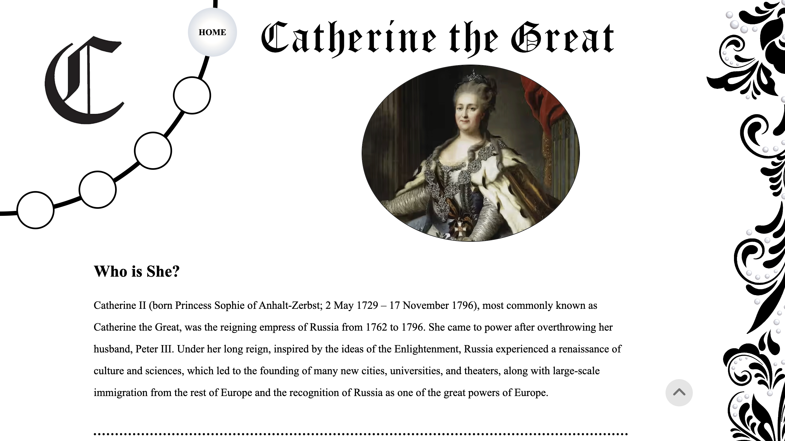

Recipe Project
This is a recipe for a classic in my house - scones! I wanted the web page to feel elegant, homey and understated. Scones are both a comfort food and a bit sophisticated. I tried use imagery and a sticky sidebar of ingredients to make the page as user friendly as possible.

Microsite - Designer/Developer
I worked with Ben Eskenazi on a website about Keith Haring. Getting to incorporate Haring's bright imagery, hand drawn vibe and iconic icons was so fun. I loved coming up with mobile end desktop based designs, and figuring out how to implement them. I am also really proud of the dancing icons in the inner screens.
Microsite - Creative Director
Leah Fontenot was a great collaborator on my website on Catherine the Great. I am beyond impressed by her circular nav, and the hand-drawn filigree that runs down the side of each page. Working with another person was a unique challenge, and I loved watching how my ideas and hopes have combined with hers!